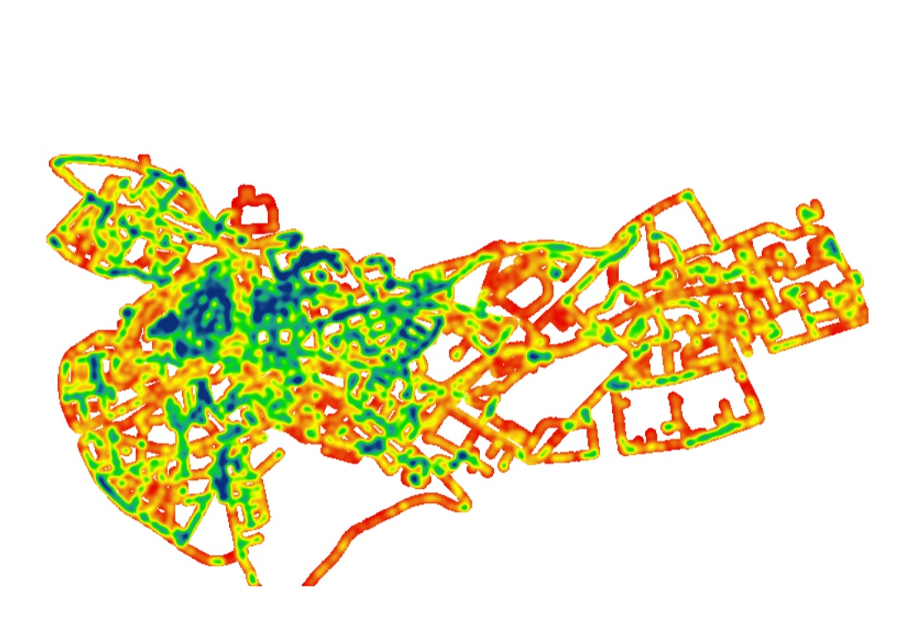

From Ballroom to Dead End — Tallinn Night Map
Does a street’s importance in the city network predict how well it’s lit? To test this, the team didn’t look for existing data — they built their own light-measuring instrument and drove and cycled it through Tallinn after dark.
Presented as a research poster, “From ballroom to dead end – Correlation between accessibility and illumination in street lighting,” at EAEA11 (the 11th conference of the European Architectural Envisioning Association, 2013, Track 1: “Visualizing Sustainability — making the invisible visible”), under the team’s original name, Spatial Intelligence Unit, based at the Estonian Academy of Arts.
A custom Arduino MEGA rig with three light sensors, a GPS module, and a temperature sensor for calibration logged readings every two seconds while driven (and, on pedestrian-only streets, cycled) through central and eastern Tallinn between April and June 2013 — 33,581 data points in total. Readings were compared against space-syntax accessibility measures (betweenness, integration, straightness, depth) computed for the same streets, using kernel density estimation to map where light intensity and network accessibility converge or diverge.
A self-built field study, from hardware assembly and calibration through several months of nighttime data collection to a finished A0 conference poster.
{kind=link}

Open full size ↗